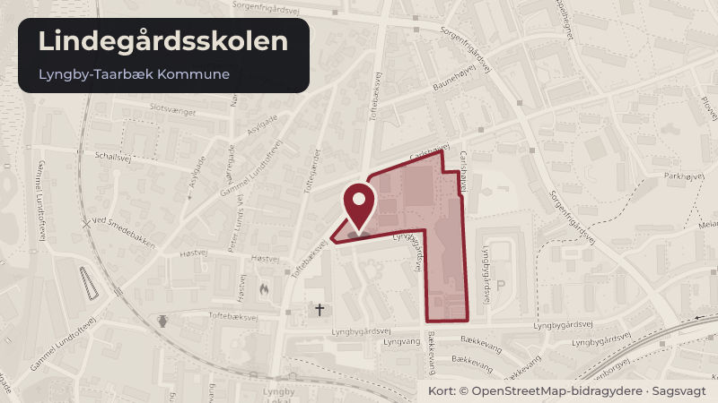

Besluttet 8. oktober, Kommunalbestyrelsen, Lyngby-Taarbæk
Anlægsbevilling til renovering af etagedæk på Lindegårdsskolen
Skoler og børnBudget og økonomi

Kort fortalt
- Hvem
- Kommunalbestyrelsen, Lyngby-Taarbæk Kommune
- Hvornår
- Torsdag 8. oktober 2026
- Status
- Besluttet. Økonomiudvalget anbefaler. Kommunalbestyrelsen beslutter. BESLUTNINGSFORLØB Beslutning fra Økonomiudvalget 2026-2029, den 1. oktober 2026, punkt 4: Ad 1-2) Anbefalet.
- Næste skridt
- Såfremt indstillingspunkterne godkendes, vil forvaltningen kunne indgå kontrakt med rådgiver og dermed videreføre projektet vedrørende renoveringen af etagedækket på Lindegårdsskolen i overensstemmelse med den fastlagte tidsplan.
Er noget forkert her? Skriv til os
Læs hele sagen Kommunens egen tekst
Indstilling
Forvaltningen foreslår, at
1. der gives en anlægsbevilling på 38,9 mio. kr. til projektet med renovering af
Lindegårdsskolen i 2027-28, finansieret af det afsatte rådighedsbeløb til anlægsprojektet
"Renovering af Lindegårdsskolen" i 2027-28,
2. der gives en yderligere anlægsbevilling på 3,8 mio. kr. i 2028 til renoveringsprojektet på
Lindegårdsskolen til reetablering af udvalgte faglokaler, finansieret af det afsatte
rådighedsbeløb til anlægsprojektet "Rådighedsbeløb til lokaler på folkeskoler" med 0,4
Problemstilling
I november 2025 blev der konstateret nedbøjninger i gulvkonstruktionen i den ældste bygning
på Lindegårdsskolen. Kommunalbestyrelsen besluttede først den 26. marts 2026 (sag 7) at
give en anlægsbevilling på 1 mio. kr. til den indledende projektering af udbedringen af
etagedækkene og efterfølgende den 25. juni 2026 (sag 8), at der i anlægsprogrammet for
2027-36 indgår yderligere 38,9 mio. kr. til det samlede projekt. Anlægsprogrammet indgår i
Budget 2027-30, som behandles i indeværende udvalgsrunde.
I henhold til projektets tidsplan forventer forvaltningen at indgå kontrakt med en rådgiver i
efteråret 2026 og at udbyde entreprisen primo 2027. Tidsplanen for projektet er stram og
fastlagt ud fra, at renoveringen skal være færdig inden skoleåret 2028/2029, hvor lejemålet til
genhusning af Lindegårdsskolen udløber. For at følge tidsplanen er der behov for en
anlægsbevilling til det videre arbejde.
Den indledende projektering og nærmere afklaring af renoveringsprojektet har afdækket, at der
vil være ekstra udgifter forbundet med at reetablere de faglokaler, der berøres af den
omfattende renovering af etagedækkene. De planlagte arbejder nødvendiggør således, at
indvendige installationer, fast inventar og øvrige bygningsdele i de berørte områder skal tages
ned, og at faglokalerne efterfølgende skal reetableres, så de kan tages i brug med samme
funktionalitet og standard som før renoveringen. Dele af det faste inventar som fx
arbejdsborde, høvlebænke og opbevaringsskabe i faglokalerne er taget ned og flyttet til
Lindegårdsskolens genhusningslokation. Forvaltningen har i den forbindelse konstateret, at det
faste inventar er mere medtaget af flytningen end først antaget og ikke egner sig til genbrug.
Store dele af de tekniske installationer, herunder ventilation og udsugning, kan heller ikke
genbruges, da dele af ventilationssystemet er placeret i det nedbøjede etagedæk og er blevet
beskadiget som følge heraf. Udgiften til faglokaler er estimeret til ca. 3,8 mio. kr. En
gennemførelse af projektet, der gør lokalerne egnet til skolebrug, forudsætter derfor en
yderligere anlægsbevilling.
Overvejelser om muligheder for at kunne stoppe projektet undervejs
På baggrund af tidligere politiske drøftelser har forvaltningen overvejet at indarbejde en særlig
passus i kommende entrepriseaftaler om mulighed for at stoppe arbejdet efter udbedring af de
berørte etagedæk. Forvaltningen kan ikke anbefale dette, da en sådan tekst i en
entrepriseaftale vil tilskynde bydere til at komme med et dyrere tilbud, idet en entreprenør i
givet fald ikke kan være sikker på at få indtægt for hele opgaven. Også set i lyset af, at
renoveringen er en forudsætning for, at Lindegårdsskolen kan vende tilbage efter udløb af
lejemålet på genhusningslokationen, har forvaltningen derfor ikke planlagt med at indarbejde
en sådan option ind i udbuddet af entreprisen.
Løsninger
Udgangspunktet for renoveringsprojektet er, at skolen efter renoveringen fremstår med samme
antal basis- og faglokaler som før der blev konstateret nedbøjninger i gulvkonstruktionen.
Forvaltningen anmoder om en anlægsbevilling på 38,9 mio. kr. til renoveringsprojektet på
Lindegårdsskolen, som finansieres af det afsatte rådighedsbeløb til anlægsprojektet
"Renovering af Lindegårdsskolen" i 2027-28. Dette er under forudsætning af, at
Kommunalbestyrelsen godkender sagen "2. behandling af Budget 2027-30", der behandles i
indeværende udvalgsrunde. Forvaltningen kan i så fald indgå kontrakt med rådgiver og følge
projektets tidsplan.
Forvaltningen anmoder derudover om en yderligere anlægsbevilling på 3,8 mio. kr. i 2028 til
reetablering af faglokaler, som finansieres af det afsatte rådighedsbeløb til anlægsprojektet
"Rådighedsbeløb til lokaler på folkeskoler" med 0,4 mio. kr. i 2027, 2,9 mio. kr. i 2028 og 0,5
mio. kr. i 2029.
De faglokaler, som skal etableres, omfatter Fysik/Kemi, Biologi/Natur og Teknik samt
Håndværk og design. I disse faglokaler skal der etableres installationer, som lever op til de
gældende lovkrav, samt indkøbes nyt inventar, hvor det eksisterende ikke længere kan
genbruges, så de kan tages i brug med samme funktionalitet og standard som før
renoveringen. Den foreløbige estimerede merudgift er fordelt som nedenfor:
Fysik/Kemi: 1,5 mio. kr.
Biologi/Natur og teknik: 0,5 mio. kr.
Håndværk og design: 1,0 mio. kr.
Derudover er der budgetteret med 0,8 mio. kr. til uforudsete udgifter med videre.
Tidsplanen for gennemførelse af anlægsprojektet er bilagt (Bilag 1).
Strategisk ramme
Principper for kommunale ejendomme i Lyngby-Taarbæk Kommune 2020.
Vedligeholdelse af kommunens bygningsmasse og gennemførelse af anlægsprogrammet.
Økonomi
Hvis Kommunalbestyrelsen godkender anlægsbevillingerne, vil der samlet være givet en
anlægsbevilling på 42,7 mio. kr. til renovering af Lindegårdsskolen. Renoveringen vil omfatte
reetablering af berørte faglokaler på skolen.
Mens anlægsbevillingen på de 38,9 mio. kr. - under de nævnte forudsætninger - finansieres af
det allerede afsatte rådighedsbeløb til projektet, finansieres de 3,8 mio. kr. til faglokalerne af
anlægsprojektet "rådighedsbeløb til lokaler på folkeskoler".
Ifm. Budget 2021-24 blev der afsat 21,9 mio. kr. til "rådighedsbeløb til lokaler på folkeskoler".
Midlerne har blandt andet finansieret selvstændige anlægsprojekter som etablering af
"Håndværk- og Designlokale på Kongevejens Skole" samt "Madkundskabslokale på
Fuglsanggårdsskolen". Rådighedsbeløbet til projektet udgør nu 11,3 mio. kr., hvoraf 1,1 mio.
kr. er forbrugt, mens de resterende midler er budgetlagt i perioden 2027-2030. Projektets
formål er at understøtte opgradering og modernisering af faglokaler på kommunens
folkeskoler. Såfremt finansieringen herfra godkendes, vil rådighedsbeløbet udgøre 7,5 mio. kr.,
hvoraf de ikke-forbrugte 6,4 mio. kr. vil kunne anvendes til andre faglokaler.
Ved godkendelse af anlægsbevillingen godkendes det samtidig, at projektet følger den "mindre
omfattende model", jf. anlægsstyringsreglerne. Det vil sige, at anlægsprojektet ikke igen
forelægges til politisk stillingtagen. Forvaltningen vurderer således, at projektet i forhold til valg
af materialer o.l. er ukompliceret.
Sagens bevillingsmæssige konsekvenser fremgår nedenfor:
p/l
Udvalg /
Aktivitetsområde
Renovering af
Økonomiudvalget
Lindegårdsskolen
/ Anlæg
Rådighedsbeløb
til lokaler på
Økonomiudvalget
folkeskoler
/ Anlæg
I alt
Varig?
ja/nej
Nej
Nej
Videre proces
Såfremt indstillingspunkterne godkendes, vil forvaltningen kunne indgå kontrakt med rådgiver
og dermed videreføre projektet vedrørende renoveringen af etagedækket på Lindegårdsskolen
i overensstemmelse med den fastlagte tidsplan.
Beslutning
Økonomiudvalget anbefaler.
Kommunalbestyrelsen beslutter.
BESLUTNINGSFORLØB
Beslutning fra Økonomiudvalget 2026-2029, den 1. oktober 2026, punkt 4:
Ad 1-2) Anbefalet.
Kilde: Lyngby-Taarbæk Kommune, Kommunalbestyrelsen, referat fra mødet torsdag 8. oktober 2026, punkt 3. Læs den originale sag hos kommunen.
Steder i sagen: Lindegårdsskolen